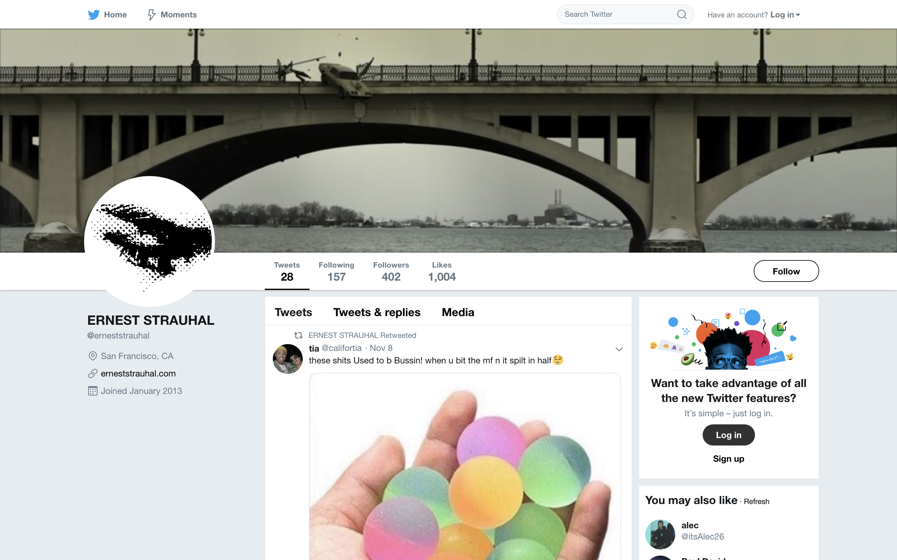
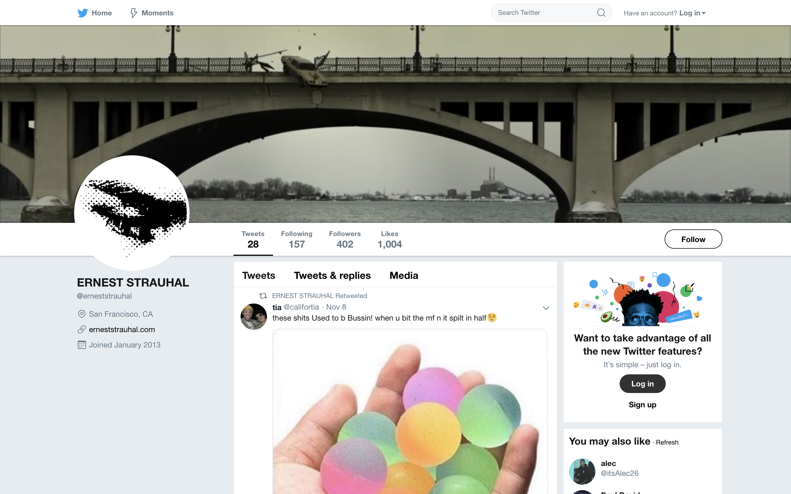

a timeline of ernest


FOUR YEARS OLD
One distinct memory I have dates back to 2004 where I was bawling my eyes out to my father since I wanted to go on the computer despite knowing nothing about computers or the internet or how any of that worked. I remember quite clearly that the first website I visited as a four year old was lego.com with some assistance from my father as I sat on his lap.


SIX YEARS OLD
As I grew up with the internet, I remember that I would invite friends over to my house just to play flash games on Internet Explorer. I didn't have any real video games growing up, so I had to make do with rudimentary games that ran on Adobe Flash Player at the time.


EIGHT YEARS OLD
One flash game in particular that I remember spending a lot of time playing as a child was Poptropica. Poptropica was an online role-playing game where players can compete in multiplayer games but also communicate with each other through pre-selected dialogue options. Yup, Poptropica was the place to be if you were a child in the late 2000s.


10 YEARS OLD
As I "matured" (not really), my appetite for flash games moved away from the kid-friendly graphics of Poptropica and more towards violent, arcade-style flash games that independent developers were putting on flash game websites like Addictinggames.com or Newgrounds. Although looking back on my gaming habits as a kid makes me cringe, there was definitely something "dangerous" about playing "mature" games on the family computer.


12 YEARS OLD
2012 may have been the year where I started shifting away from playing flash games on the internet and more towards meeting and connecting with friends and strangers over the internet. Regrettably, my first excursions with social media started with Google+, a now defunct social network started by Google in hopes of rivaling Facebook. Sometimes, I reminisce about how my peak on Google+ in 2014 when I had around 700 followers on my page.


14 YEARS OLD
Starting high school, my classmates and I started using Reddit, an online forum where users could create their own communities based around shared interests and hobbies. I still remember laughing for hours with my friends at r/dankmemes, a subreddit that is either loved or reviled depending on whether you graduated high school or not.


16 YEARS OLD
In the middle of high school, I began becoming more and more obsessed with myself and my appearance as teenagers usually do, which meant that I began using Instagram more and more. One day, I became so obsessed to overtake my friends in followers that I remember gaining 200 followers in one day just to get ahead of them. Yeah, I really hate social media.


18 YEARS OLD
At the moment, the only website I really frequent is Twitter, a website which is now 13 years old. Since I'm so bogged down with schoolwork right now, I occasionally tend to search for ideas on Pinterest or Behance, but it seems for the first time that the internet has finally taken a backseat in my life.
/cdn.vox-cdn.com/uploads/chorus_image/image/64731424/Light_Mode_Home_1500x1500_Eng_JV.png.img.fullhd.medium.0.png)
 
